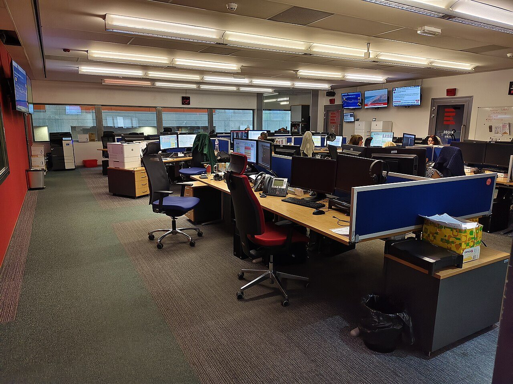
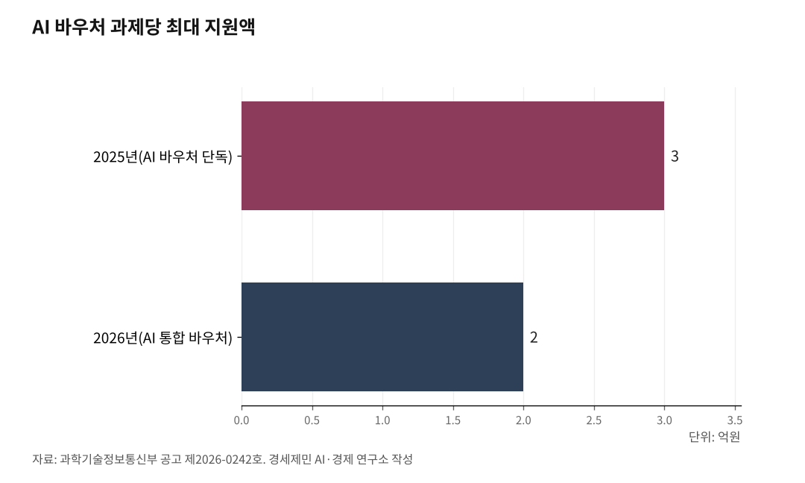

[AGI시대 지역언론⑤] 오픈소스로 열린 지역언론 AI, 재원 구조가 발목
인천시 AI 예산 993억, 지역언론 몫은 확인되지 않는다
언론재단 1억·AI 통합 바우처 2억, 실제 AI 도입엔 부족
지역신문발전기금 AI 전용 트랙 신설 과제
문제는 그 다음이다. 기사 아카이브 벡터화, 운영 인력 배치, 매체 고유 문체 학습 같은 확장 단계에는 해마다 수천만원에서 수억원이 든다. 현행 중앙 지원사업과 지방정부 예산 구조는 이 규모를 덮지 못한다. 기술은 풀렸는데 재원이 따라오지 못하는 것이 2026년 지역언론 현실이다.

1. 시작 문턱은 350만원, 확장 재원은 언론재단 1억
시작과 확장은 구조가 다르다. 시작은 자부담 350만원이면 된다. 카나나 2.1B처럼 작은 공개 소프트웨어 모델은 RTX 4090(엔비디아 중급 그래픽카드) PC 한 대에서 돌고, 빅카인즈 접속구를 연동하면 자사 기사 기반 AI 검색도 붙는다. 중부일보가 2025년 9월 이 방식으로 지역언론 최초 AI 검색 서비스를 개통했다.
확장은 규모가 다르다. 기사 아카이브 벡터 저장, 검색 증강 생성(RAG, Retrieval-Augmented Generation) 체계 구축, 모델 상설 운영, 유지보수 인력까지 두려면 수천만원에서 수억원이 든다. 검색 증강 생성은 AI가 자사 기사를 먼저 찾아 그 내용만 근거로 답을 만드는 기술로, 환각을 줄여 언론에 적합하다.
한국언론진흥재단 '디지털 미디어 서비스 개발 지원 사업'이 확장 단계 대표 재원이다. 2025년 공고 기준 신규 최대 1억원, 고도화 최대 5000만원을 자부담 10% 이상 조건으로 지원했다. 지원금은 외부 용역비, 장비 임차비, 외부 개발자 인건비에만 쓸 수 있어 운영비로 전환할 수 없다. 언론재단이 2026년 4월 17일 'PMO(사업관리조직) 용역'(공고 제2026-082호-1)을 재공고해 2026년에도 본 사업은 진행된다.
실제 사례를 보면 1억원 용처가 드러난다. 대구일보는 2025년 5월 선정돼 검색 증강 생성 기반 AI 보도자료 자동 기사화 체계 고도화에, 동아일보는 2023년 경제·경영 챗봇 애스크비즈 개발에 각각 1억원을 썼다. 지역언론이 AI 서비스 하나를 만드는 단계까지는 이 재원으로 닿지만, 상설 운영까지 감당하기엔 부족하다.

2. AI 통합 바우처 2026년 2억으로 축소
과학기술정보통신부와 정보통신산업진흥원은 2026년 AI 바우처·자료 바우처·클라우드 바우처를 'AI 통합 바우처'로 합쳤다(과기정통부 공고 제2026-0242호). 2025년까지 AI 바우처 단독 최대 3억원이었는데 통합과 함께 과제당 최대 2억원으로 줄었다. 분과는 일반·AI 반도체·소상공인·글로벌 4개로, 지역언론 분과는 없다.
가장 큰 제약은 신청 구조다. 수요기업과 공급기업이 반드시 컨소시엄을 짜야 하고 공급기업은 국내 AI 솔루션 기업이어야 한다. 언론사 단독 신청은 불가능하다. 지역언론이 이 사업을 쓰려면 AI 솔루션 기업 상용 제품을 도입하는 구조가 돼, 매체 고유 문체를 반영한 자체 서비스 구축과 결이 다르다.
3. 지역신문발전기금 AI 전용 트랙이 없다
문화체육관광부 지역신문발전위원회는 지역신문발전기금으로 '지역신문 제안사업'을 운영한다. 지역언론이 기획한 사업을 심사해 지원하는 짝꿍 기금 방식으로 자부담 10% 이상이 조건이다. 2025년 공모 지원 분야는 '경영 개선 사업'과 '디지털 혁신 사업' 두 갈래로, 디지털 혁신에 AI 과제를 담아 제안할 수는 있다.
다만 AI 전용 트랙은 없다. AI 서버 구축, 검색 증강 생성 체계 개발 같은 규모 있는 과제가 다른 디지털 혁신 과제와 함께 심사되고 소액 지원이 많아, 개별 매체가 AI 서버 구축에 들어갈 수억원 단위 재원을 이 트랙으로 맞추기 어렵다.
4. 인천시 AI 예산 993억, 지역언론 몫은 확인되지 않는다
인천시는 2026년 2월 '2026년 인천시 지능정보사회 실행계획'을 확정했다. 시와 공사·공단이 한 해 추진할 지능정보화 사업 종합계획으로 총 사업비는 993억원이다. 시는 '디지털로 실현되는 인천의 꿈, 모두가 누리는 플랫폼 인천'을 비전으로 지능형 업무관리 플랫폼 도입과 차세대 지방행정공통 체계 구축을 핵심 과제로 세웠다.
조직과 제도도 정비했다. 2026년 1월 미래산업국 디지털산업과를 'AI과'로 개편하고 '4차 산업혁명 촉진 조례'를 '디지털 융복합 촉진 조례'로 개정했다. 인천관광공사는 2026년 4월 20일 '2026 인천 관광기업 AX·DX 지원사업'으로 17개사를 선정하는 등 산업 지원도 이어갔다.
그러나 993억원 가운데 지역언론 AI 지원 전용 사업은 확인되지 않는다. 제조업 AI 대전환, 관광기업 AI 도입, 행정 AI 고도화에는 예산이 배정됐지만 시민이 매일 접하는 뉴스 생산 현장 지원은 비어 있다. 인천시의회 조례에서도 지역언론 AI 지원 조항은 확인되지 않는다.
5. 언론재단 보고서가 제시한 자체 구축 근거 세 가지
한국언론진흥재단이 2026년 1월 공개한 연구보고서 「언론사를 위한 오픈소스 LLM 활용 방안」(전창영·이종혁·백강희) 해설 기사를 보면, 보고서는 언론사가 상용 AI 대신 자체 구축을 택해야 하는 근거 세 가지를 제시한다. 첫째는 비용 예측 가능성이다. 상용 AI 접속구는 호출량에 비례해 비용이 늘어 이용자가 많아질수록 매체 부담이 예측 불가능해지는 반면, 공개 소프트웨어 모델 자체 구축은 초기 비용 이후 추가 지출이 최소 수준이다.
둘째는 자료 통제와 보안이다. 상용 AI에 기사와 취재 자료를 넘기면 그 자료가 AI 학습에 쓰일 위험이 있어, 미공개 취재 메모와 독자 개인정보를 자체 서버에 격리해야 한다는 설명이다. 셋째는 뉴스룸 맞춤이다. 매체마다 문체와 편집 기준, 지역 용어가 달라 자사 기사로 미세조정해야 매체 정체성이 반영된다.
보고서는 '본격적인 뉴스룸 거대언어모델 체계로 나아가려면 공개된 언어모델 기반 자체 구축이 필요하다'고 제안했다. 언론재단은 이 연구를 이어 2026년 4월 20일 '신문사 AI 전환을 위한 인프라 지원 수요 조사 연구' 용역(공고 제2026-088호)을 발주했다. 예산 8770만원, 기간 2026년 11월 30일까지다. 언론재단에서도 신문사 AI 전환 기반시설 지원 방안은 2026년 4월 현재 수요 조사 단계다.
6. 시작 재원은 보이는데, 운영 재원이 빈 칸이다
현행 지원사업 구조를 정리하면 세 단계 공백이 드러난다. 첫째 단계 시작 재원은 확보 가능하다. 350만원 자부담이나 언론재단 미디어 스타트업 지원사업 3000만원이면 PC 한 대와 빅카인즈 API 연동은 덮는다. 중부일보 사례가 이 가능성을 보여줬다.
둘째 단계 단일 개발 재원도 있다. 언론재단 디지털 미디어 서비스 개발 지원 사업 1억원이나 AI 통합 바우처 2억원으로 검색 증강 생성 체계 한 건 개발이 가능하다. 대구일보·동아일보가 이 단계를 거쳤다.
셋째 단계 지속 운영 재원은 비어 있다. 모델 고도화, 매체 고유 문체 미세조정, 유지보수 인력, 자료기지 증설은 해마다 이어져야 하는데 이 경상 운영비를 매년 지원하는 사업은 확인되지 않는다. 한국일보 '하이(H.AI)'나 동아일보 애스크비즈처럼 상설 서비스를 운영하려면 해마다 수천만원에서 수억원이 드는데, 이 몫이 현행 재원 구조에 없다.
2026년 6월 3일 지방선거가 한 달 반 앞이다. 중앙 지원사업 AI 전용 트랙 신설, 광역시도 전용 예산 편성, 지역언론 AI 지원 조례 제정이 각 후보 공약에서 어떻게 다뤄질지가 남은 과제다.
참고문헌
· 한국언론진흥재단, "2025년 디지털 미디어 서비스 개발 지원 사업 공모(2.24.~3.12.)", 2025.2.19., https://www.kpf.or.kr/front/board/boardContentsView.do?board_id=254&contents_id=7814e8af7317408ebaa49ee0f40040aa
· 한국언론진흥재단, "2025년 디지털 미디어 서비스 개발 지원 사업 공모 최종 심사 결과 발표", 2025.3., https://www.kpf.or.kr/front/board/boardContentsView.do?board_id=254&contents_id=f68659d1bb9949faa255e68b14880aaf
· 한국언론진흥재단 제2026-082호-1, "[재공고] 2026년 디지털 미디어 서비스 개발 지원 PMO 용역", 2026.4.17., 한국언론진흥재단 입찰공고
· 한국언론진흥재단 제2026-088호, "신문사 AI 전환을 위한 인프라 지원 수요 조사 연구", 2026.4.20., 한국언론진흥재단 입찰공고
· 한국언론진흥재단, "2026년 미디어 스타트업 지원사업 공고(~4.3)", 2026.3.10., https://www.bizinfo.go.kr/sii/siia/selectSIIA200Detail.do?pblancId=PBLN_000000000119540
· 과학기술정보통신부 공고 제2026-0242호, "2026년도 AI 통합 바우처 지원사업", 2026.2.27., https://www.nipa.kr/home/2-2/16592
· 전창영·이종혁·백강희, 「언론사를 위한 오픈소스 LLM 활용 방안」, 한국언론진흥재단 연구보고서, 2026.1., 해설 https://kpf.or.kr/front/news/articleDetail.do?seq=600208
· 대구일보, "2025 디지털 미디어 서비스 개발 지원사업 개발사 선정 입찰 공고", 2025.5.23., https://www.idaegu.com/bbs/view.html?idxno=21
· 지역신문발전위원회, "2025년도 지역신문 제안사업 2차 공모 안내", 2025.4., http://www.cln.or.kr/cln/index.do
· 매일일보, "인천시, 2026년 지능정보사회 실행계획 확정", 2026.2.2., http://www.m-i.kr/news/articleView.html?idxno=1332314
· 국제뉴스, "인천시, '2026년 지능정보사회 실행계획' 심의·확정", 2026.2., https://www.gukjenews.com/news/articleView.html?idxno=3495261
· 중부일보, "AI·신재생에너지 전담부서 신설… 인천시, 신산업 맞춤 조직 재편", 2025.12.17., https://www.joongboo.com/news/articleView.html?idxno=363712003
· 오마이뉴스, "AI로 관광 혁신 나선 인천... 50개사 몰린 '디지털 전환' 기대감", 2026.4.20., https://www.ohmynews.com/NWS_Web/View/at_pg.aspx?CNTN_CD=A0003226382
※ 이 기사는 AI 프로그램 클로드를 활용해 작성했습니다.
사진 출처
· [대표사진] Mojmir Churavy, "Budova CR Vinohr 12 Newsroom A.jpg", 위키미디어 공용, CC0, https://commons.wikimedia.org/wiki/File:Budova_CR_Vinohr_12_Newsroom_A.jpg
※ 이 기사는 인공지능을 활용해 작성했습니다.
관련기사
- [AGI시대 지역언론①] 자체 AI서비스 가능 조건은 서버
- [AGI시대 지역언론④] AI 기사 시대, 저널리즘 원칙 지키는 세 기둥
- [AGI시대 지역언론③] 350만원에서 시작하는 지역언론 AI 서버
- [AGI시대 지역언론②] 빅카인즈 API 연동, 별도 비용 없이 AI 검색 개통
저작권자 © AI경세제민 무단전재 및 재배포, AI학습 및 활용 금지